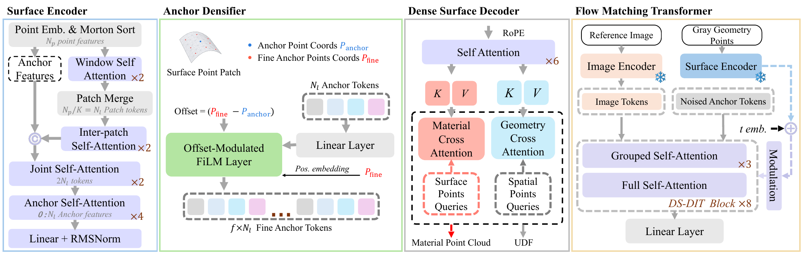

ICLR 2027 · Anonymous author response
DSTex · Author response
Dense Surface Decoding for Native PBR Texture Generation
Read by reviewer
All reviewer responses
Each reply includes its supporting figures and tables.
f=1: without densifierf=8: with densifierMR: metallic–roughness
01Contribution & prior work
Q:
How does the Anchor Densifier differ from prior token expansion and native texturing methods?
A. We agree that feature projection, positional embeddings, and FiLM are standard operations. Our contribution is a decoding design that constructs and refines denser material features at mesh-sampled locations while keeping the diffusion latent count fixed. The controlled decoder comparisons test this design against increasing depth or width (see NmGX W2 / Q2 and GgL7 W1 / Q1).
MSVS-VAE and DSTex differ in where fine features are placed, how they are constructed, and how they are queried. Both expand compact latents during decoding. MSVS-VAE hierarchically splits features, predicts child offsets, and aggregates local neighbors across scales for SDF prediction.
In DSTex, the given mesh directly supplies the fine anchor positions. Each latent is projected with shared weights and adapted to these positions through absolute position embeddings and relative-offset modulation. Self-attention then refines the dense tokens, and material queries attend to the full refined set.
A. DSTex increases the spatial density of decoder features while keeping the diffusion latent count fixed. Compared with the evaluated baselines, it generates finer texture details, including small lettering and closely spaced patterns.
This design is motivated by a property of texture generation: material detail need not coincide with geometric detail. A flat surface can carry intricate patterns without any change in shape. We therefore construct additional, position-conditioned feature tokens directly at mesh-sampled locations, providing denser feature support for continuous material queries.
The distinction lies in how these features are constructed and queried. NaTex supports continuous texture queries and reports detail scaling through increased latent counts. DSTex expands features only during decoding, leaving the diffusion sequence unchanged. For PBR generation, NaTex uses a separately trained material model conditioned on generated albedo, whereas DSTex jointly models albedo and metallic–roughness with one latent set and one diffusion model.
LaFiTe and TRELLIS.2 decode sparse representations into local feature grids or voxel material attributes; DSTex constructs features at sampled surface locations, refines them with self-attention, and queries the full refined set. These approaches offer different computational trade-offs.
| Prior work | Prior approach | DSTex distinction |
|---|---|---|
| MSVS-VAE(Hao et al., 2026) | Hierarchical point-shuffle splits feature channels and predicts child offsets. Multi-scale local-neighbor aggregation predicts SDF. | The given mesh supplies fine anchor coordinates. Direct expansion uses shared projection and relative offsets; material queries attend to all refined fine tokens. |
| NaTex(Lai et al., 2026b) | Continuous color queries from geometry-conditioned latent sets; reported detail scaling increases the latent count. PBR uses a separately trained material DiT and two-stage generation: albedo first, then albedo-conditioned MR. | Expand each latent into multiple surface feature tokens only in the decoder, using shared projection and relative-position modulation. The diffusion latent count stays fixed. Albedo and MR are jointly modeled with one latent set and one diffusion model. |
| LaFiTe(Chen et al., 2026) | Sparse latents decode to local feature grids. Each query interpolates features, then an MLP predicts color. | Fine feature tokens are placed on the mesh surface. Each material query cross-attends to the full token set after self-attention refinement. |
| TRELLIS.2(Xiang et al., 2026) | SC-VAE decodes material attributes on a sparse voxel grid. Surface queries trilinearly interpolate neighboring voxel attributes. | Continuous query heads predict albedo and MR from learned surface feature tokens, with query positions and normals as inputs. |
The distinctions concern feature placement, expansion, query readout, and material modeling. Local interpolation and global query attention offer different computational trade-offs.
Code and pretrained weights for NaTex and LaFiTe were not publicly available at evaluation time, so we could not include them in the quantitative comparison (Section 4, Baselines).
Material detail need not coincide with geometric detail: fine lettering and closely spaced stripes can appear on a flat panel without changing its shape. This motivates placing denser, position-conditioned feature tokens directly on the known mesh surface, increasing decoding capacity for localized material variations while keeping the diffusion latent count fixed.
Together with the Surface Encoder and DS-DiT, this design forms a complete native PBR generation framework that jointly models albedo and metallic–roughness from a mesh and a reference image. Table 2 evaluates the individual design choices, while Table 1 evaluates the complete generation framework.
Increasing decoder parameter count alone yields limited reconstruction gains under our controlled training setup. All four models train at 4K latents; deeper/wider capacities are selected for comparable forward decoding latency at 4K inference. DSTex achieves higher held-out surface-query albedo PSNR at 4K with fewer parameters and lower peak decoding memory (Figure 10; Table 3). At 16K with fixed weights, it improves all six reconstruction metrics over both variants, with longer decoding and texture baking (Table 2(e, f); Table 3).
Across latent budgets, the 16K densified model reduces end-to-end runtime by 45.5% relative to the 32K model without densification, while achieving lower metallic and roughness errors and lower relighting LPIPS (Tables 1 and 4). We acknowledge the mixed perceptual effects of relative FiLM and discuss that trade-off separately in UMid W2.
Together, the Surface Encoder, dense surface decoder, and image- and geometry-conditioned DS-DiT form a complete native PBR generation framework. Table 2 below isolates the reconstruction gains from the encoder and densification, while Table 1 evaluates the resulting generation quality.
| Configuration | Albedo | Metallic–roughness | ||||
|---|---|---|---|---|---|---|
| Model | PSNR ↑ | LPIPS ↓ | SSIM ↑ | PSNR ↑ | LPIPS ↓ | SSIM ↑ |
| Cross-attention encoder / f=1 | 29.40 | 0.2465 | 0.8386 | 31.51 | 0.1205 | 0.8719 |
| Surface Encoder / f=1 | 31.63 | 0.1820 | 0.8732 | 33.81 | 0.0746 | 0.8848 |
| Absolute PE only / f=8 | 33.34 | 0.1349 | 0.9043 | 34.89 | 0.0552 | 0.9169 |
| Surface Encoder + densifier / f=8 | 34.22 | 0.1342 | 0.9154 | 35.21 | 0.0618 | 0.9091 |
4K training, 16K inference with fixed weights; 1,000 assets. PSNR is in dB. Cell highlights follow Table 2. Both f=8 variants use the Surface Encoder and densifier; the last row additionally uses relative FiLM.
Architecture details & surface-token construction
In the revision · Sections 2–4; Tables 1–3.
02Offset modulation
W:
Does offset-conditioned FiLM provide a perceptual benefit beyond expansion with absolute positional embeddings?
A. We agree with the reviewer’s reading of the ablation: relative FiLM adds little to albedo LPIPS (0.1349 → 0.1342), while MR LPIPS and SSIM favor absolute positional embeddings alone.
We view this as a design trade-off. With the encoder and expansion factor fixed (f=8), relative FiLM improves albedo/MR PSNR by 0.88/0.32 dB and improves albedo SSIM. We retain it for these reconstruction gains, while accepting and reporting the worse MR LPIPS and SSIM.
| Configuration | Albedo | Metallic–roughness | ||||
|---|---|---|---|---|---|---|
| Model | PSNR ↑ | LPIPS ↓ | SSIM ↑ | PSNR ↑ | LPIPS ↓ | SSIM ↑ |
| Absolute PE only | 33.34 | 0.1349 | 0.9043 | 34.89 | 0.0552 | 0.9169 |
| Absolute PE + relative FiLM | 34.22 | 0.1342 | 0.9154 | 35.21 | 0.0618 | 0.9091 |
4K training, 16K inference with fixed weights; 1,000 assets. PSNR is in dB. Cell highlights follow Table 2.
Complete position-conditioning and expansion ablations
In the revision · Section 4.2; Table 2(c).
03Decoder capacity
Q:
Compare densification with deeper or wider standard decoders under a similar computational budget.
A. At 4K inference latents, DSTex achieves higher held-out surface-query albedo PSNR than deeper and wider decoders at comparable forward decoding latency, with fewer parameters and lower peak decoding memory (Figure 10; Table 3).
Experimental setup
We select the deeper and wider architectures by approximately matching their forward decoding latency to DSTex at 4K inference latents. All four models are trained from scratch at 4K latents for 5M sample presentations using the same data, Muon and AdamW, and a constant learning rate of 10−4 (Appendix B.1). The standard (f=1) and densified (f=8) decoders use 6 layers of width 768.
The resulting deeper and wider models use 52 × 768 and 6 × 6144 architectures, respectively. Their decoding latencies are 52.6 and 49.6 ms, compared with 57.0 ms for DSTex.
DSTex uses 58M parameters, versus 491M and 3.62B, and its peak decoding memory at 4K inference latents is 1.19 GiB, versus 1.35 and 7.91 GiB (Table 3). Texture baking, including material queries, is measured separately.

Analysis
Increasing decoder parameter count alone yields limited reconstruction gains under this training recipe and sample budget. Densification gives lower final training texture loss and higher held-out surface-query albedo PSNR at 4K inference latents than the deeper and wider variants (Figure 10).
In a joint VAE–autoregressive training setting, GenFirst (Zheng et al., 2026) also finds that increasing decoder depth does not necessarily improve reconstruction quality (Section 3.2, Figure 4b).
Table 2 compares albedo and MR reconstruction at 16K inference latents with the trained weights fixed. DSTex improves all six metrics over the deeper and wider variants, as shown in Table 2(e, f) below.
| Configuration | Albedo | Metallic–roughness | ||||
|---|---|---|---|---|---|---|
| Model | PSNR ↑ | LPIPS ↓ | SSIM ↑ | PSNR ↑ | LPIPS ↓ | SSIM ↑ |
| DSTex (f=1) | 31.63 | 0.1820 | 0.8732 | 33.81 | 0.0746 | 0.8848 |
| Deeper (52 × 768) | 31.80 | 0.1741 | 0.8839 | 33.43 | 0.0755 | 0.8922 |
| Wider (6 × 6144) | 32.23 | 0.1667 | 0.8895 | 34.25 | 0.0717 | 0.9010 |
| DSTex (f=8) | 34.22 | 0.1342 | 0.9154 | 35.21 | 0.0618 | 0.9091 |
4K training, 16K inference with fixed weights; 1,000 assets. PSNR is in dB. Cell highlights follow Table 2.
These 16K quality gains come with longer decoding and texture-baking times than the deeper and wider variants. DSTex constructs 128K decoder feature tokens from 16K latents, increasing the feature set processed by refinement and material queries. Table 3 reports actual decoding latency and peak memory at both inference latent counts, with baking timed separately.
| Configuration | 4K latents | 16K latents | ||||
|---|---|---|---|---|---|---|
| Decoder | Params | Decode (ms) | Peak (GiB) | Decode (ms) | Peak (GiB) | Bake 2K (s) |
| DSTex (f=1) | 57M | 6.6 | 0.52 | 17.6 | 0.83 | 1.06 |
| Deeper (52 × 768) | 491M | 52.6 | 1.35 | 143.4 | 1.66 | 1.07 |
| Wider (6 × 6144) | 3.62B | 49.6 | 7.91 | 272.3 | 10.31 | 1.09 |
| DSTex (f=8) | 58M | 57.0 | 1.19 | 729.6 | 3.50 | 4.30 |
Decoding constructs and refines surface features. Baking separately includes UV rasterization, per-texel material queries, seam dilation, and host transfer. Peak decoding memory includes decoder weights.
Evaluation protocol & additional design ablations
In the revision · Section 4.2; Table 2(e, f); Table 3; Figure 10.
04Latent budget & runtime
Q:
Report full-set quality and end-to-end runtime for both 16K settings, especially the densified 16K model against the unexpanded 32K model.
A. Compared with the 32K model without densification, the 16K densified model reduces mean end-to-end runtime from 45.25 to 24.67 s (45.5%), with lower material error and lower relighting LPIPS. Relighting LPIPS is 0.0751 versus 0.0816. Metallic and roughness MSE are 0.0392 and 0.0316, versus 0.0580 and 0.0460, respectively—reductions of 32.4% and 31.3%.
Full-pipeline peak GPU memory is also lower: 36.1 / 38.6 GiB for the 16K densified model versus 38.4 / 40.9 GiB for the unexpanded 32K model (median / maximum, including allocator reserve; Table 4).
Both 16K settings are evaluated on all 1,000 assets under the expanded lighting protocol: six shared reference HDRIs and six other randomly sampled relighting HDRIs. The complete generation table (Table 1) reports all four latent/expansion settings. Nine of the eleven quality metrics numerically favor the densified 16K model over the unexpanded 32K model; both CMMD scores favor the latter. Both material-map variances are also lower. Within each variant (f=1 or f=8), the 16K and 32K evaluations use the same trained VAE and diffusion-model weights; only the inference latent count changes.
| Model | Latents | Time (s) ↓ | Peak (GiB) | Relit LPIPS ↓ | M MSE ↓ | R MSE ↓ | MR LPIPS ↓ |
|---|---|---|---|---|---|---|---|
| DSTex (f=1) | 16K | 17.94 | 35.8 / 39.2 | 0.0844 | 0.0619 | 0.0472 | 0.3665 |
| DSTex (f=8) | 16K | 24.67 | 36.1 / 38.6 | 0.0751 | 0.0392 | 0.0316 | 0.3258 |
| DSTex (f=1) | 32K | 45.25 | 38.4 / 40.9 | 0.0816 | 0.0580 | 0.0460 | 0.3648 |
| DSTex (f=8) | 32K | 55.49 | 38.2 / 42.4 | 0.0721 | 0.0334 | 0.0282 | 0.3240 |
Peak GPU memory is measured per process over the full pipeline, including allocator reserve; values are median / maximum (Table 4). Highlights follow Table 1. The texture and relighting tables immediately below complete all eleven quality metrics, including both CMMD exceptions.
| Model | Latents | CLIP-FID ↓ | CMMD ↓ | CLIP-I ↑ | LPIPS ↓ |
|---|---|---|---|---|---|
| DSTex (f=1) | 16K | 12.46 | 0.872 | 0.9528 | 0.2025 |
| DSTex (f=8) | 16K | 11.59 | 0.836 | 0.9559 | 0.1909 |
| DSTex (f=1) | 32K | 12.12 | 0.824 | 0.9540 | 0.1965 |
| DSTex (f=8) | 32K | 11.56 | 0.819 | 0.9560 | 0.1884 |
| Model | Latents | CLIP-FID ↓ | CMMD ↓ | CLIP-I ↑ | LPIPS ↓ |
|---|---|---|---|---|---|
| DSTex (f=1) | 16K | 9.97 | 0.609 | 0.9742 | 0.0844 |
| DSTex (f=8) | 16K | 9.74 | 0.597 | 0.9753 | 0.0751 |
| DSTex (f=1) | 32K | 9.76 | 0.573 | 0.9751 | 0.0816 |
| DSTex (f=8) | 32K | 9.65 | 0.554 | 0.9757 | 0.0721 |
| Model | Latents | Albedo variance ↓ | MR variance ↓ |
|---|---|---|---|
| DSTex (f=1) | 16K | 2.95 | 15.26 |
| DSTex (f=8) | 16K | 2.48 | 12.60 |
| DSTex (f=1) | 32K | 2.74 | 13.50 |
| DSTex (f=8) | 32K | 2.36 | 11.15 |
Values ×10⁻³; variance across the six reference-lighting outputs, averaged over valid texels, channels, and 1,000 assets. Metric definition.
In the revision · Section 4.3; Tables 1, 4; Figure 7.
05Runtime & memory
Q:
Separate material decoding and texture baking, report memory, and show the cost of different expansion factors.
A. At 32K, densification increases end-to-end runtime from 45.25 to 55.49 s (+22.6%) under the updated timing protocol. The added cost is in decoding and baking; diffusion sampling remains the main runtime bottleneck.
In the default f=8, 32K configuration, material decoding takes 2.98 s and 2K texture baking takes 8.47 s. Full-pipeline peak GPU memory is 38.2 GiB (median) / 42.4 GiB (maximum), including allocator reserve (Table 4).
Table 4 reports mean stage times for all three baselines and both 32K DSTex configurations over the same 1,000 assets on A100 SXM4 GPUs. Timing includes input preparation through final textured GLB export and excludes model loading. For DSTex, baking includes UV rasterization, per-texel material queries, seam dilation, and transfer to host memory. The totals also appear alongside quality in Table 1.
We reviewed all evaluation pipelines and re-timed all methods using this shared timing boundary. We removed redundant I/O while retaining each method’s required inference stages and default model settings, including MR generation for LumiTex. For DSTex, the cleanup addressed issues such as unused input-texture loading, repeated input reads, an intermediate mesh re-export, and duplicate texture-map writes; model weights, sampling steps, and guidance are unchanged.
| Stage | TRELLIS.2 | UniTEX | LumiTex | DSTex f=8 | DSTex f=1 |
|---|---|---|---|---|---|
| GLB loading and mesh preparation | 0.12 | 1.31 | 0.33 | 0.26 | 0.25 |
| Conditioning / geometry encoding | 5.96 | 0.43 | 8.37 | 1.04 | 1.09 |
| Diffusion sampling | 2.51 | 58.43 | 59.28 | 40.98 | 40.42 |
| Completion / material decoding | 0.12 | 8.72 | 7.65 | 2.98 | 0.072 |
| Texture baking (2K) | 2.63 | 0.37 | 26.90 | 8.47 | 1.64 |
| Textured GLB export | 5.46 | 2.04 | 2.31 | 1.76 | 1.78 |
| Total | 16.80 | 71.30 | 104.84 | 55.49 | 45.25 |
Mean times over the same 1,000 assets, from input GLB loading to textured GLB export; model loading is excluded. Both DSTex columns use 32K latents, 25 sampling steps, and CFG 3. Baselines retain their default model settings; LumiTex includes MR generation. Stage labels group each method’s corresponding operations.
The Anchor Densifier operates after diffusion, expanding decoder features without lengthening the diffusion sequence. At a fixed latent count, this increases decoding and baking cost while sampling time remains similar. With DM sampling still the main runtime bottleneck, we identify distillation and quantization as future directions for faster, more memory-efficient inference (Section 5).
| Model | 16K latents | 32K latents |
|---|---|---|
| DSTex (f=1) | 35.8 / 39.2 | 38.4 / 40.9 |
| DSTex (f=8) | 36.1 / 38.6 | 38.2 / 42.4 |
Peak GPU memory per process over the complete generation pipeline, including allocator reserve.
Table 5 shows a reconstruction-quality versus decoder-cost trade-off. These controlled VAE ablations are trained at 4K latents; Table 1 separately evaluates generation with the final 8K-trained models. At both inference budgets, larger expansion factors improve albedo and MR PSNR while increasing decoding, baking, and memory costs. At the same decoded support count, f=4 at 32K has higher reconstruction PSNR than f=8 at 16K, with similar decoder costs but twice as many latents. Memory covers decoding and includes decoder weights.
| f | Latents | Support tokens | Decode (ms) | Bake 2K (s) | Peak (GiB) | Albedo PSNR | MR PSNR |
|---|---|---|---|---|---|---|---|
| 1 | 16K | 16K | 17.6 | 1.06 | 0.83 | 31.63 | 33.81 |
| 4 | 16K | 64K | 204 | 2.39 | 2.0 | 33.17 | 34.59 |
| 8 | 16K | 128K | 729.6 | 4.30 | 3.50 | 34.22 | 35.21 |
| 1 | 32K | 32K | 55 | 1.51 | 1.2 | 33.54 | 34.83 |
| 4 | 32K | 128K | 757 | 4.25 | 3.5 | 34.93 | 35.84 |
| 8 | 32K | 256K | 3030 | 8.32 | 6.6 | 36.60 | 37.59 |
Six-layer decoders of width 768, trained at 4K. Reconstruction PSNR is reported at both 16K and 32K; peak memory covers decoding and includes weights. Table 4 above uses the final 8K-trained VAE–DM pairs.
Timing boundaries, expansion costs & measurement correction
In the revision · Appendix C; Tables 3–6.
06Materials & lighting
Q:
Separate albedo from metallic/roughness improvements, and evaluate material predictions under varied reference and novel relighting HDRIs.
Evaluation protocol & attribution formulas
In the revision · Tables 1, 7; Appendix D.
07Real photographs
Q:
The original qualitative examples mainly use generated images. Show results on photographs with real lighting.
A. We add real-photograph results in Figure 9 and Appendix D, using the default f=8 model with 32K inference latents. Each mesh is generated from the input photograph and textured by DSTex using that photograph.
The 16 examples below are interactive. Rotate them together, switch illumination, or inspect base color, metallic, and roughness separately. Input photographs and their source credits are available for each object.
Real photographs · 16 results
Drag any model to rotate. Switch lighting or material channels below; select a photo to enlarge the input.
Preparing interactive 3D examples…
Observed failure cases
The real-photograph results provide qualitative evidence because ground-truth materials are unavailable. In Figure 15, the kettle’s glazed surface is expected to have relatively uniform roughness, yet the predicted roughness varies with its floral pattern. This may reflect albedo–roughness correlations in the training materials. A specular highlight also remains in the camera lens’s predicted base color, possibly due to the limited representation of transparent lenses in the training data.
Real-photo setup & possible explanations of the failures
In the revision · Table 1; Figures 5, 9; Appendix D, Figures 13–15.
Detailed evidence
Supporting evidence
Methods, complete comparisons, and evaluation protocols for the replies above. Table and figure numbers follow the revised paper.
A. Architecture & surface-token construction
The Surface Encoder produces 64-channel anchor latents. The decoder projects them to width 768 before expansion and refinement. At the default 32K inference latent count and f=8, it constructs 256K fine anchor tokens for material queries.
Training has two stages. We first train DS-VAE to reconstruct ground-truth materials, then freeze it while training DS-DiT. During generation, geometry conditioning comes from the frozen Surface Encoder applied to positions and normals with neutral material values.

How the surface tokens are constructed
- Place anchors on the supplied surface. The Surface Encoder groups Morton-ordered surface samples into patches. Each patch supplies one anchor latent. Fine anchor coordinates are equally strided samples from the same patch; generation reuses the geometry-conditioning point sample.
- Expand features at those locations. Each latent is projected with shared weights. An absolute position embedding is added for each fine anchor; FiLM then applies a channel-wise scale and shift conditioned on its offset from the parent anchor. These projections have parameter shapes independent of the expansion factor.
- Refine and query the dense field. Six full self-attention blocks of width 768 refine the fine tokens. Separate albedo and MR query heads embed a surface position and normal, then cross-attend to the full refined token set.
At fixed latent count Nl, expansion produces Nf = fNl decoder tokens. The diffusion appearance sequence stays at Nl; the number of output material queries is independent of both counts. Increasing f adds decoding and baking cost, as reported in the runtime and memory details.
The complete framework is evaluated by generation quality and end-to-end runtime. The contribution of the Surface Encoder, expansion strategy, and position conditioning is examined separately in the reconstruction ablations.
In the revision · Section 3; Figure 3; Appendix A.
B. Controlled decoder comparisons
All four controlled models are trained at 4K latents. The standard, deeper, wider, and densified models all train from scratch for 5M sample presentations with the same data, Muon and AdamW, and a constant learning rate of 10−4 (Appendix B.1). Deeper and wider capacities are selected for forward decoding latency close to the densified model at 4K inference latents. Table 3 in the reply reports measured costs at both inference latent counts.
What each quality evaluation measures
- Training curves · Figure 10, left and middle
- Texture loss is plotted on a log scale. Albedo PSNR is computed on training batches’ surface query points. Both curves average over windows of about 40K sample presentations.
- Held-out curve · Figure 10, right
- Periodic evaluation uses 4K inference latents and 4,096 assets from the 20,000-asset held-out split. Squared errors are pooled over all their surface query points before computing a single albedo PSNR.
- Reconstruction metrics · Table 2
- The 4K-trained ablations are evaluated at 16K inference latents with fixed weights. Each of the 1,000 evaluation assets has six unlit material-channel renders at 1024 × 1024. PSNR, SSIM, and LPIPS are averaged over views, then equally over assets.
Table 2 evaluates RGB albedo and MR packed into the first two channels, with the third fixed to zero. All methods use the same cameras, backgrounds, texture filtering, and linear RGB encoding. LPIPS uses AlexNet. View Figure 10 in the reply ↑
Design and capacity ablations
| Model / configuration | f | K | Params | Albedo PSNR ↑ | Albedo LPIPS ↓ | Albedo SSIM ↑ | MR PSNR ↑ | MR LPIPS ↓ | MR SSIM ↑ |
|---|---|---|---|---|---|---|---|---|---|
| (a) Cross-attention encoder | 1 | -- | 57M | 29.40 | 0.2465 | 0.8386 | 31.51 | 0.1205 | 0.8719 |
| (a) Surface Encoder / f=1 | 1 | 32 | 57M | 31.63 | 0.1820 | 0.8732 | 33.81 | 0.0746 | 0.8848 |
| (b) Direct expansion | 4 | 32 | 58M | 33.17 | 0.1448 | 0.9045 | 34.59 | 0.0625 | 0.9162 |
| (b) Progressive expansion | 2 → 4 → 8 | 32 | 61M | 33.30 | 0.1116 | 0.9115 | 33.35 | 0.0577 | 0.9208 |
| (c) Absolute PE only | 8 | 32 | 58M | 33.34 | 0.1349 | 0.9043 | 34.89 | 0.0552 | 0.9169 |
| (d) Patch size K=16 | 8 | 16 | 58M | 33.03 | 0.1430 | 0.9025 | 33.12 | 0.0642 | 0.9075 |
| (d) Patch size K=64 | 8 | 64 | 58M | 33.47 | 0.1265 | 0.8955 | 34.00 | 0.0611 | 0.8841 |
| (e) Deeper (52 × 768) | 1 | 32 | 491M | 31.80 | 0.1741 | 0.8839 | 33.43 | 0.0755 | 0.8922 |
| (e) Wider (6 × 6144) | 1 | 32 | 3.62B | 32.23 | 0.1667 | 0.8895 | 34.25 | 0.0717 | 0.9010 |
| DSTex / f=8 (shared reference) | 8 | 32 | 58M | 34.22 | 0.1342 | 0.9154 | 35.21 | 0.0618 | 0.9091 |
All rows train at 4K and evaluate at 16K. PSNR is in dB; Params counts decoder parameters. The final row is the shared f=8 reference for groups (b–e). Group labels and score highlights follow Table 2.
Under this shared 4K training setup, increasing decoder parameter count alone yields limited reconstruction gains. Densification gives higher held-out surface-query albedo PSNR at 4K inference latents (Figure 10) and improves all six reconstruction metrics at 16K with fixed weights (Table 2). The 16K gains come with longer decoding and texture-baking times than the deeper and wider models (Table 3). Other design choices have mixed effects: progressive expansion gives lower LPIPS, while direct expansion with f=8 gives higher PSNR; relative FiLM improves both PSNRs and albedo SSIM, while absolute position embeddings alone give better MR LPIPS and SSIM.
Final autoencoders and TRELLIS.2
| Model | Train → infer / grid | Decoder params | Albedo PSNR ↑ | Albedo LPIPS ↓ | Albedo SSIM ↑ | MR PSNR ↑ | MR LPIPS ↓ | MR SSIM ↑ |
|---|---|---|---|---|---|---|---|---|
| DSTex (f=1) | 8K → 32K | 57M | 36.21 | 0.0888 | 0.9357 | 38.46 | 0.0326 | 0.9476 |
| DSTex (f=8) | 8K → 32K | 58M | 38.94 | 0.0442 | 0.9606 | 40.61 | 0.0160 | 0.9659 |
| TRELLIS.2 | Voxel R=512 | — | 31.41 | 0.1686 | 0.8890 | 26.45 | 0.1668 | 0.8348 |
| TRELLIS.2 | Voxel R=1024 | — | 36.61 | 0.0755 | 0.9452 | 29.99 | 0.1203 | 0.8781 |
| TRELLIS.2 | Voxel R=1536 | — | 39.87 | 0.0450 | 0.9631 | 32.24 | 0.1060 | 0.8968 |
DS-VAE uses 8K training and 32K inference latents; TRELLIS.2 uses the stated voxel resolution. Score highlights follow the corresponding comparison group in Table 2. TRELLIS.2’s decoder parameter count is not reported here.
The final DS-VAE variants continue from their corresponding 4K checkpoints for another 5M sample presentations at 8K, then use 32K inference latents. TRELLIS.2 encodes voxelized ground-truth materials with its texture SC-VAE and samples the decoded field on the original mesh; its errors include voxelization and surface readout. The evaluation assets are excluded from our training but may overlap with TRELLIS.2’s pretraining data.
In the revision · Section 4.2; Tables 2–3; Figure 10; Appendix B.
C. Generation, runtime & memory
Complete generation results · Table 1
| Configuration | Texture (UV) | Relighting (image) | Material (UV) | Runtime | |||||||||||
|---|---|---|---|---|---|---|---|---|---|---|---|---|---|---|---|
| Method | Latents | UV CLIP-FID ↓ | UV CMMD ↓ | UV CLIP-I ↑ | UV LPIPS ↓ | Albedo var. (×10⁻³) ↓ | Relit CLIP-FID ↓ | Relit CMMD ↓ | Relit CLIP-I ↑ | Relit LPIPS ↓ | M MSE ↓ | R MSE ↓ | MR LPIPS ↓ | MR var. (×10⁻³) ↓ | Time (s) ↓ |
| LumiTex | — | 14.58 | 1.263 | 0.9341 | 0.2867 | 4.12 | 14.37 | 1.197 | 0.9538 | 0.1055 | 0.1402 | 0.0905 | 0.6844 | 17.46 | 104.84 |
| UniTEX | — | 15.23 | 1.272 | 0.9274 | 0.3041 | 6.35 | 16.05 | 1.292 | 0.9503 | 0.1193 | — | — | — | — | 71.30 |
| TRELLIS.2 | — | 14.29 | 1.154 | 0.9346 | 0.2840 | 3.05 | 12.99 | 1.030 | 0.9532 | 0.0869 | 0.1379 | 0.0939 | 0.6591 | 19.76 | 16.80 |
| DSTex (f=1) | 16K | 12.46 | 0.872 | 0.9528 | 0.2025 | 2.95 | 9.97 | 0.609 | 0.9742 | 0.0844 | 0.0619 | 0.0472 | 0.3665 | 15.26 | 17.94 |
| DSTex (f=8) | 16K | 11.59 | 0.836 | 0.9559 | 0.1909 | 2.48 | 9.74 | 0.597 | 0.9753 | 0.0751 | 0.0392 | 0.0316 | 0.3258 | 12.60 | 24.67 |
| DSTex (f=1) | 32K | 12.12 | 0.824 | 0.9540 | 0.1965 | 2.74 | 9.76 | 0.573 | 0.9751 | 0.0816 | 0.0580 | 0.0460 | 0.3648 | 13.50 | 45.25 |
| DSTex (f=8) | 32K | 11.56 | 0.819 | 0.9560 | 0.1884 | 2.36 | 9.65 | 0.554 | 0.9757 | 0.0721 | 0.0334 | 0.0282 | 0.3240 | 11.15 | 55.49 |
Quality is evaluated on 1,000 assets under the same six reference HDRIs. Variance measures per-texel variation across the six predicted maps (×10⁻³). Relighting LPIPS is computed directly on native 1024 × 1024 renders. Material evaluation details give the aggregation and relighting protocol. UniTEX material metrics are not reported (—); relighting uses fixed metallic = 0 and roughness = 0.5. Times are mean per-asset end-to-end runtime over the same asset set. As in Table 1, orange with bold marks the best value; blue with an underline marks the second-best.
Baselines: LumiTex (Bao et al., 2026), UniTEX (Liang et al., 2026), and TRELLIS.2 (Xiang et al., 2026).
Timing boundaries
- Complete generation · Tables 1 and 4
- From reading the input GLB and constructing the scene to exporting the textured GLB and its 2K maps: preparation, conditioning, diffusion, decoding, baking, and export. Model loading is excluded. The stage breakdown is in the runtime reply.
- Material decoding
- Constructing and refining the decoder’s surface features. Densification happens after diffusion. Timing uses A100 SXM4 GPUs; decoding and material queries use bf16 in the shared software environment.
- 2K texture baking
- UV rasterization, per-texel material queries, seam dilation, and transfer of the baked textures to host memory. Baking is measured separately from decoding.
Expansion-factor costs
The complete Table 5 is displayed with the runtime reply.
Table 5 reports reconstruction quality and decoding/baking costs at 16K and 32K for VAE ablations trained at 4K, all with six self-attention blocks of width 768. Table 1 separately reports generation quality and end-to-end runtime for the final 8K-trained f=1/8 models; Table 4 gives their 32K stage costs. Decoding peak memory in Table 5 includes decoder weights.
GPU memory during decoding and full generation
Tables 3 and 5 report peak GPU memory during decoding, including decoder weights. The full-pipeline memory table (Table 4) instead reports per-process peaks over complete generation, including allocator reserve, summarized by median and maximum over tasks. These peaks include stages outside decoding and are measured separately. Densified 16K uses less full-pipeline peak GPU memory than unexpanded 32K, complementing their quality–runtime comparison.
Correction to the original runtime measurement
We reviewed all evaluation pipelines and re-timed the three baselines over the same 1,000 assets, using the shared GLB-loading-to-export boundary. Redundant I/O is removed while retaining each method’s required inference stages and default model settings. LumiTex includes MR generation. The runtime reply describes the DSTex I/O corrections; its model weights, sampling steps, and guidance are unchanged. Table 4 now reports the stage breakdown across methods, and Table 1 uses the corresponding mean totals.
In the revision · Generation results: Section 4.3 and Table 1; current timing protocol and costs: Appendix C and Tables 4–5.
D. Material evaluation & attribution
Shared assets and reference lightings
Reference images for the generation and channel-swap evaluations are rendered in Blender EEVEE (Appendix B.2).
The expanded lighting evaluation uses the same 1,000 GLB assets with ground-truth PBR materials, randomly selected from the 20,000-asset held-out split. All methods use the same mesh, reference image, geometry, and UV layout. Each asset’s near-frontal reference view is rendered under the same six reference HDRIs, shared across all assets, and every method generates once from each reference.
Relighting uses six other randomly sampled HDRIs and six matched camera views at 1024 × 1024, with identical sampled illuminations for all predictions and ground truth. RGBA renders are composited onto a white background; Table 1 relighting LPIPS is computed directly at the native 1024 × 1024 resolution, without resizing. UniTEX uses fixed metallic = 0 and roughness = 0.5 for relighting; its material metrics are not reported.
- Pairwise scores
- CLIP-I, LPIPS, and MSE average over the 6,000 asset–reference-lighting pairs, with the corresponding view and relighting averages for rendered-image scores.
- Distribution scores
- CLIP-FID and CMMD are computed separately for each reference lighting over 1,000 assets, then averaged over the six lightings.
- Feature encoders
- For both UV and relighting evaluation, CLIP-FID and CLIP-I use CLIP ViT-B/32 with 224 × 224 inputs; CMMD uses CLIP ViT-L/14-336 with 336 × 336 inputs. All methods share the same metric implementations and preprocessing.
- UV-map LPIPS
- Albedo UV LPIPS and MR LPIPS are computed with 256 × 256 inputs.
- Material-channel scores · Table 1
- Metallic and roughness MSE are computed on the shared baked UV atlas, using the same ground-truth valid-texel mask for every method. MR LPIPS uses AlexNet on the packed metallic–roughness UV map.
Material-map variance · Table 1
For each asset and method, compute population variance (divide by six) at each texel and channel across the six predicted 2048 × 2048 UV maps. Average over valid texels and three channels, then equally over all 1,000 assets. Table 1 reports albedo and MR separately, in units of ×10⁻³.
Albedo uses sRGB values. The packed MR map includes a constant channel whose zero variance remains in the three-channel average; albedo and MR magnitudes should therefore be compared across methods, not against each other. Both use the shared ground-truth coverage mask, as in M/R MSE, excluding hole-filled texels. Lower variance indicates more consistent predictions across reference lightings; the accompanying quality metrics assess accuracy.
Channel swaps and Shapley attribution
This analysis uses the same 1,000 assets, with one reference image per asset under one fixed HDRI. For each asset, all map pairings and ground truth are rendered under one shared, randomly sampled HDRI from six views at 1024 × 1024. LPIPS is evaluated both at 256 × 256 and at native 1024 × 1024, then averaged over assets and views.
Let d denote DSTex (f=8, 32K) and o a compared variant. We render their two original predictions and two hybrids: albedo from o with MR from d, and albedo from d with MR from o. The common mesh and UV layout allow direct map swaps without rebaking. For i, j ∈ {o, d}, g(i, j) is mean relighting LPIPS to ground truth using predicted albedo from model i and predicted MR from model j. Ground truth supplies only the scoring reference, not any maps in these combinations.
Δ = g(o,o) − g(d,d)
CA = ½ [g(o,o) − g(d,o) + g(o,d) − g(d,d)]
CMR = ½ [g(o,o) − g(o,d) + g(d,o) − g(d,d)]
Albedo and MR interact during rendering, so a channel’s improvement can depend on which is replaced first. Averaging its improvements across both replacement orders gives an order-independent contribution. CA + CMR = Δ exactly before rounding; positive Δ favors d. Percentage shares are 100CA/Δ and 100CMR/Δ, computed from unrounded values.
The complete channel-swap table is displayed with the material reply.
Figure 5: what the error heatmaps show
Absolute error is computed against aligned, same-camera unlit ground truth, averaged over four reference lightings and over three albedo channels or two MR channels. The constant third MR channel is excluded. Evaluation uses pixels covered in all predictions and ground truth, with a two-pixel erosion to remove antialiased silhouette edges.
All heatmaps use the same 0–0.183 color range; larger errors are clipped. The upper limit is the 90th percentile over the valid errors from both methods and both material groups. Darker red indicates larger error. View Figure 5 ↑
Real photographs and failure cases
The real-photograph results use the default f=8 model with 32K inference latents on meshes generated from the input photographs. They provide qualitative evidence: ground-truth materials and views of the unseen sides are unavailable. The 16 interactive examples expose the predicted material channels and allow viewing under different illumination.
The kettle’s glazed surface is expected to have relatively uniform roughness, yet the predicted roughness varies with its floral pattern. This may reflect correlations between albedo and roughness in the training materials, including roughness maps derived from albedo. On the camera, a specular highlight remains in the lens’s predicted base color. Transparent-lens examples are scarce in the training data, which may contribute to this error.
Figure 15 appears directly in the real-photograph reply.
In the revision · Table 1; Table 7; Figures 5, 9, 13–15; Appendices B and D.